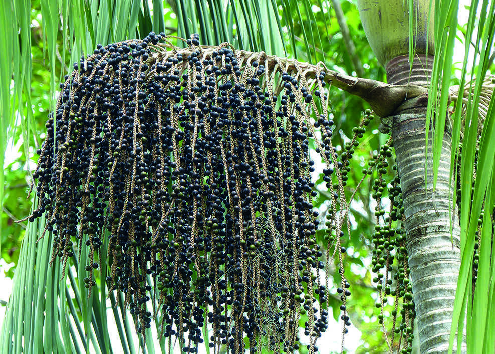
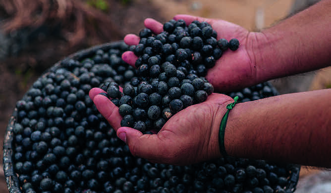

O APROVEITAMENTO DE PLANTAS COMO O AÇAÍ ESTÁ NO COTIDIANO DE MUITOS POVOS QUE VIVEM NA FLORESTA E PRESERVAM SEU ECOSSISTEMA, O QUE AJUDA NA PROMOÇÃO DA SUSTENTABILIDADE.

O AÇAIZEIRO PODE CRESCER ATÉ 25 METROS.
GUENTERMANAUS/SHUTTERSTOCK

O AÇAÍ, FRUTO DO AÇAIZEIRO, É UM ALIMENTO SABOROSO E NUTRITIVO.
ALÉM DE SER CONSUMIDO NO BRASIL, É EXPORTADO.
PATRICK CARVALHO/SHUTTERSTOCK